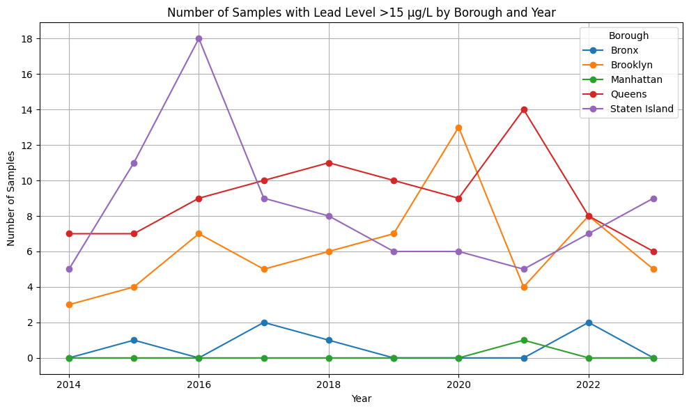
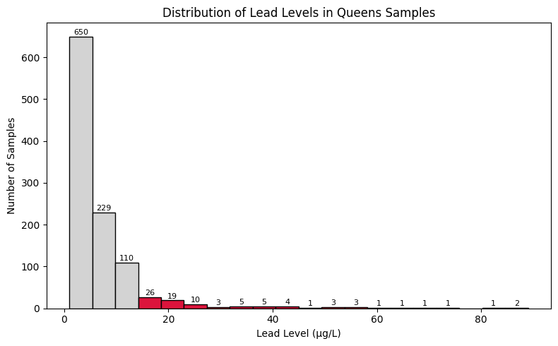
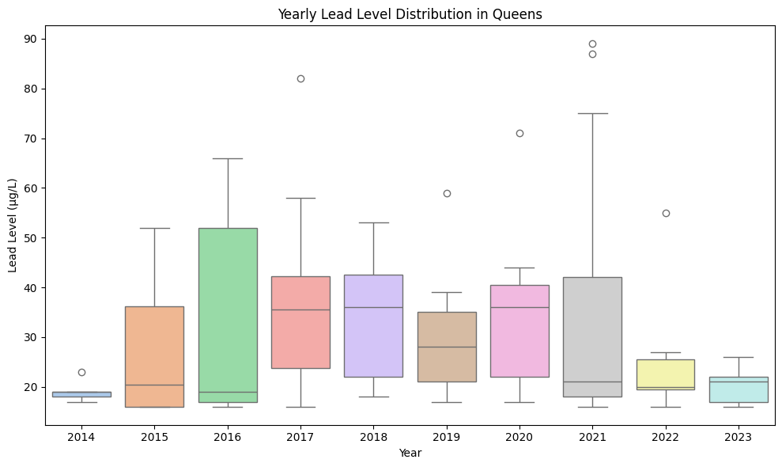
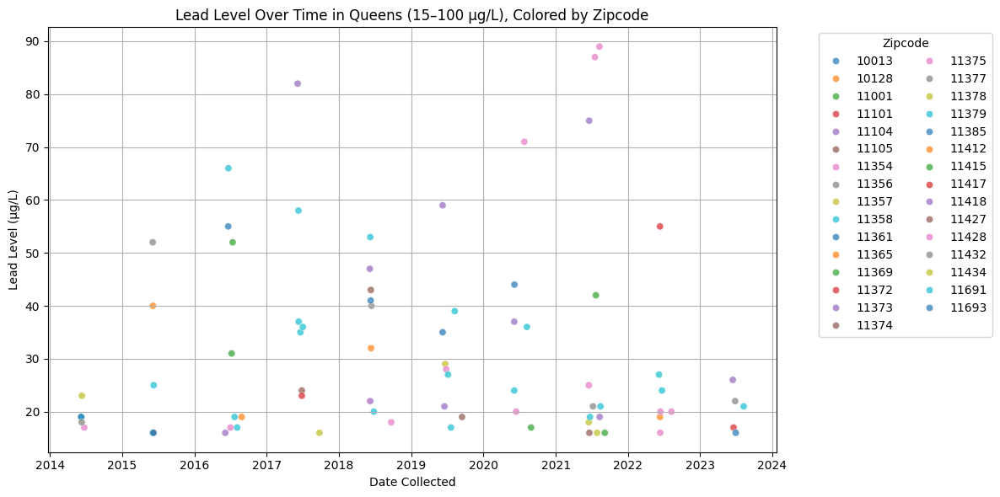
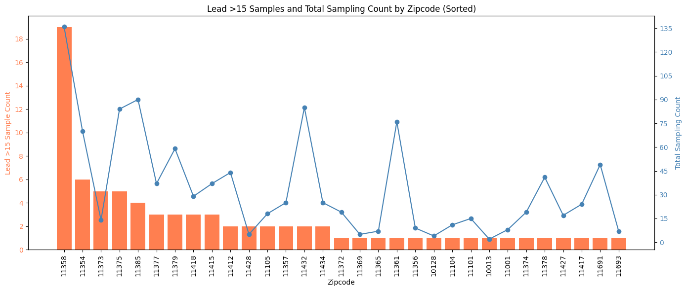

Lead Pollution Sample In NYC Tap Water
This project investigates the presence and distribution of lead contamination in New York City tap water, with a focus on the borough of Queens. Using public water testing data, I analyzed samples collected from 2014 to 2023, identifying instances where lead levels exceeded the EPA’s action threshold of 15 µg/L. The analysis begins with a borough-level comparison, which shows that Queens has consistently reported a high number of lead exceedance cases over the years. A distribution analysis of Queens samples reveals that while most lead levels are low, a significant number still surpass the safe limit. Yearly boxplots highlight fluctuations in contamination severity, with certain years showing higher medians and more outliers. To understand where these risks are concentrated, I mapped exceedances over time by zip code, revealing localized clusters and persistent hotspots. A combined bar and line chart further compares exceedance counts with total sampling frequency across zip codes. This helps distinguish between truly high-risk areas and those with more extensive testing. Overall, this project provides a clearer picture of when, where, and how lead contamination occurs in Queens, offering a foundation for further investigation and policy response.
The Google Colab link is here.
Tap Lead Pollution in NYC
This line chart visualizes the number of water samples that exceeded 15 µg/L of lead content in each borough, grouped by year. The threshold of 15 µg/L is significant because it matches the EPA's action level for lead in drinking water. Observing temporal patterns and spatial disparities — for example, certain boroughs may consistently exhibit more exceedances, can indicate possible infrastructure or environmental concerns.
Distribution Overview of Queens
Most samples in Queens are safe, but some exceed the EPA threshold. Zooming in to Queens Borough. This histogram shows the distribution of lead levels in Queens tap water samples (excluding extreme outliers). Gray bars represent samples within safe limits, while red bars show samples exceeding the EPA action level of 15 µg/L. Most samples are low, but the red bars highlight ongoing concerns in some areas. Extreme data > 100 are filtered out.
Yearly Boxplot of Lead in Queens
Yearly distribution of lead levels reveals spikes and outliers in specific years. Lead levels in Queens varied significantly across years, with higher median values and more extreme outliers between 2015–2018. A noticeable decline appears in 2022–2023, suggesting possible improvements in water quality or testing patterns.
Time Series Scatter Plot by Zipcode
Each dot represents an exceedance, colored by zip code to show neighborhood variation over time. The chart shows how high lead samples were distributed over time and location.
Zipcode-level Comparison
Comparing exceedances and total samples by zip code helps separate risk from sampling bias. I compared the number of lead exceedance cases (>15 µg/L) with the overall sampling counts by zip code in Queens. I found that zip codes with more exceedances also had more samples, suggesting that higher exceedance counts may reflect more frequent testing rather than worse contamination alone.